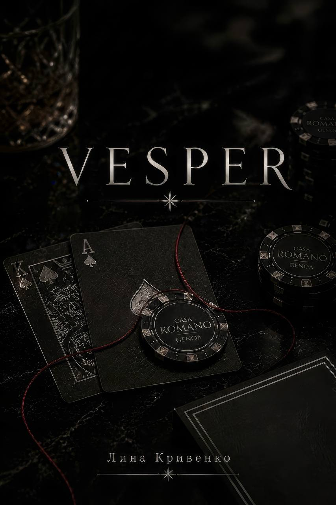
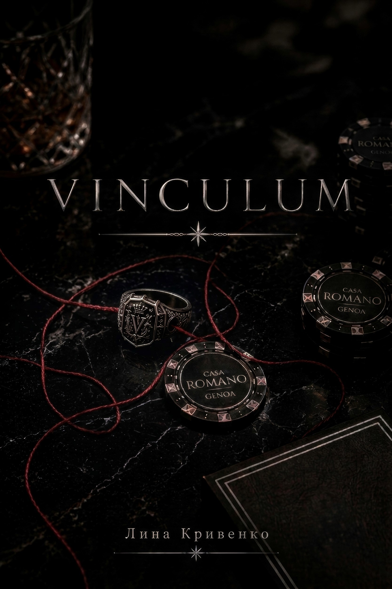
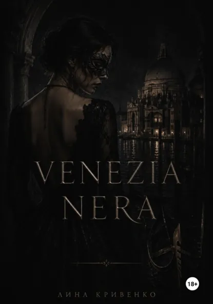

Василина Кривенко
Influence-менеджер & Писательница
Превращаю творческие идеи и рекламные кампании в масштабные проекты с высокой конверсией. Создаю глубокие миры в книгах и успешные коллаборации с брендами в жизни.
6 лет
Опыта работы
3 книги
Авторских произведения
100+ млн
Открученного бюджета в рекламе
Обо мне
Привет! Я Василина.
Моя история начинается в атмосферном Красноярске. Потом был Екатеринбург, а сегодня я живу в Сербии.
Сейчас получаю образование в области философии и работаю с удалёнными международными проектами.
В influence-маркетинге я уже 6 лет. За это время прошла путь от координатора блогерских интеграций до руководителя масштабных рекламных кампаний — от первых коммуникаций с авторами до разработки и реализации комплексных influencer-стратегий.
Работала с компаниями из самых разных сфер: e-commerce, fashion, beauty, technology и стартапами.
Мне интересно находить баланс между креативом, бизнес-задачами и живой коммуникацией с аудиторией — и превращать influence из просто рекламного инструмента в работающий элемент бренда.
Сегодня я совмещаю профессиональный опыт, интерес к философии и любовь к международной среде — и продолжаю собирать собственную оптику на маркетинг, людей и коммуникации.
Чем я занимаюсь
Мой опыт охватывает полный цикл работы с блогерами и создание вирусного контента.
Influence-маркетинг
Разработка стратегий продвижения брендов через блогеров на платформах YouTube, Telegram, Instagram, TikTok, MAX, Дзен, ВКонтакте с полным контролем ROI и CPC.
Работа с брендами
Опыт сотрудничества с различными компаниями (от локальных стартапов до федеральных брендов).
UGC & Контент-направление
Создание ТЗ для пользовательского контента (UGC), организация съемок.
Мои хобби & увлечения
То, что подпитывает мою креативность, дает силы для новых проектов и вдохновляет на написание историй.
Мои книги
Изданные произведения под авторским именем Лина Кривенко. Погружение в сложные эмоции, атмосферные миры и человеческие судьбы.

VESPER
История о поиске света в темноте, переплетении человеческих судеб и неизбежности выбора.

VINCULUM
Неразрывные связи, ментальные ловушки и расплата за тайны прошлого.

VENEZIA NERA
Мрачная изнанка каналов старой Венеции, где маски скрывают истинные лица.